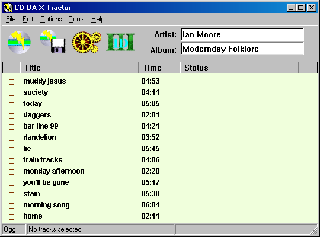

Introduction
CD-DA X-Tractor is a lightweight, fast, and free program for
digitally extracting audio from CD-roms, written for 32-bit
Windows platforms (95/98/2000/NT). If the CD-rom unit on your
computer supports Digital Audio Extraction and has an ASPI manager installed,
CD-DA X-Tractor can directly read the audio from your music CD-roms and
store it on your hard drive in either WAV, MP3 or Ogg Vorbis format.
Under Windows NT and 2000, it can even work without an ASPI manager via
the SCSI passthrough interface. For MP3 encoding, the BladeEncoder DLL and
LAME Encoder DLLs are both supported. It works on most all ATAPI (IDE)
CD-roms, and on some SCSI and CD-R/RW devices.
CD-DA X-Tractor has its roots in AKRip, a small, command-line based ripper.
It's main goals are to be small, fast and free.
